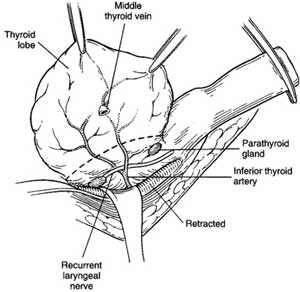

Thyroidectomy
Thyroid
anatomy
What about subtotal thyroidectomy?
Used to be done to avoid dissection around the RLN.
However to be avoided because:
- replacement is required anyway.
- regrowth poses a more difficult operation with much higher
morbidity in an older patient.
When to do both lobes in MNG?
In MNG, if both are affected do both, else just do one.
What extent of resection in
cancer?
Papillary usually diagnosed by cytology, remove whole gland.
- some recommend central compartment should be taken also.
Follicular cannot be diagnosed precisely on cytology.
- if solitary lesion <4mm, perform total lobectomy &
isthmusectomy.
- if frankly invasive, then complete total thyroidectomy within same
admission.
- if lesion >4mm or mets (lung & bone usually), take complete
gland.
- total thyroidectomy facilitates radioactive ablation of remnant.
Medullary can usually be diagnosed on cytology.
- take whole gland and central compartment.
Anaplastic and lymphoma rarely require surgery / won't change
outcome.
- latter treated with chemo/radio.
- core biopsy required to diagnose lymphoma, sometimes open biopsy
to ensure best regimen.
- occasionally debulking to clear the airway.
What about MEN pts?
Affected children of MEN 2 pts can be attempted by chasing a
specific mutation.
- untake prophylactic thyroidectomy from ~age 5 on.
Perform urine catecholamines first, risk of hypertensive crisis.
Do I take out a benign adenoma,
cysts, and toxic goitres?
Cannot clearly differntiate b/n follicular adenoma and carcinoma
cytologically.
- perform total lobectomy.
- if carcinoma confirmed, complete thyroidectomy within 48hrs
ideally.
Cysts often diagnosed on FNA aspiration; send fluid.
- if refills 2-3x, consider lobectomy.
- also consider if significant blood, residual lump >4cm or
irregular architecture on USS.
Medical therapy is initial Rx of choice for toxic goitre.
- up to 50% will relapse after medical therapy started.
- involve pt in decision making b/n radioactive iodine and surgery:
no clear answer.
What pre-op evaluation is
required?
Indirect laryngoscopy essential to identify compensated &
unsuspected recurrent nerve palsy.
Render thyrotoxic pts euthyroid first.
- carbimazole 10-15mg tds & propranolol 20mg tds if evidence of
sympathetic overdrive.
- propranolol must be continued for 8-10d post-op.
Heparin and antibiotics
no.
Technique
Access
Ensure an appropriately consented & prepared patient.
GA. Supine on table, sandbag between shoulders, arms by sides, ring
under head so neck extended but not over-extended.
- table head up ~15o to prevent neck vein engorgement.
Square drape with adhesive tape.
- folded towels are placed along lateral neck to preserve sterility.
Incise two fingerbreadths above clavicles / suprasternal notch in or
parallel to a skin crease ("collar incision")
- initially to medial border of SCM muscles.
Diathermy through subcutaneous tissue, and platysma until strap
muscles reached.
Place 2 Allis forceps on platysma and have assistant pull vertically
to demonstrate space between platysma and straps.
- investing cervical fascia should not be included in flaps.
- raise superior flap first and then inferior flas, keeping
superficial to anterior jugulars and cervical fascia.
--> - tie off jugular vessels if entered
- counter-traction facilitates dissection.
- plane should be bloodless; veins lie beneath investing fascia.
- dissect superiorly as far as the thyroid cartilage.
- dissect inferiorly as far as suprasternal notch.
Place a Joll's retractor through platysma at the midpoint of each
flap.
- fully open to show the strap muscles.
Identify pale/white midline raphe between the straps.
- pick up one side of fascia, the assistant picks up the other with
DeBakey forceps.
- incise deep cervical fascia using diathermy.
- extend superiorly / inferiorly until thyroid clearly demonstrated
(up to sternal notch)
- bloodless field is essential, secure anterior jugular branches
traversing the midline.
- inferiorly, transverse cervical vein may be encountered and need
ligation.
Cut through several thin layers of fascia until surface of gland
reached.
- take care coming down on to gland surface; bleeding here may need
oversewing sutures.
- the filmy veins on the thyroid surface can bleed profusely.
- when at the correct level, the vessels suddenly fill up with blood
as the last layer of restriction overlying is removed.
Have assistant hold up the medial edge of a strap with a small
Langenbeck.
- dissect with diathermy between thyroid and muscle, working
laterally so lobe can be mobilised.
- small veins in this plane should be diathermied; blunt dissection
leads to bleeding as vessels are friable and tear.
If the goitre is very large, divide the straps.
- divide high; at level of thyroid cartilage if possible, as nerve
supply low from ansa cervicalis.
Examine / palpate gland carefully.
Action
Stand on the patients right for the left lobe and vica versa.
Have strap muscles retracted laterally & upwards and lobe
medially with two Langenbeck retractors.
Do a "capsular dissection"
Mobilise lateral gland to improve mobility.
- ligate middle thyroid vein with 3-0 vicryl and divide
--> usually done first to mobilise.
- this vein is not actually that constant; may be 2-3, may be short
and stubby esp on the R.
- bipolar then cut lateral capsule tissue of gland with fine
haemostats
Finger and gauze for grip
Next improve mobility further by approaching superior pole.
- break down areolar tissue with a peanut as your go.
- have assistant draw straps away with retractors.
- firmly retract thyroid down with Kocher's graspers.
- separate upper pole from cricothyroid with right-angles
- identify terminal branches of sup. thyroid artery and vein close
to gland (over it if possible to avoid ELN), and ligate with 2-0
vicryl sutures
- once divided, these retract, so double ligation of the proximal
end is a wise idea.
- do not mass-ligate the upper pole or the ELN is at risk.
- can do a true capsular dissection and take vessels very close to
the gland.
[can look at Cernier scale for relationship of nerve to vessels]
- 20% passes through the branches of the terminal vessels - at high
risk
Often people use the ligasure to make this easier (or harmonic)
Now the gland may be easily rotated medially to identify the RLNs
and parathyroids.

- parathyroids are small, yellow-brown and and soft unlike lymph.
- upper parathyroid is found behind the upper third of the thyroid
adjacent to the cricothyroid jx.
Locate the carotid and retract it gently laterally.
- following the inf. thyroid a. will help identify the RLNs.
- look in triangle, where the nerve will be coursing upwards
- close in groove on left, more oblique on right.
- usually deep to inf thyroid artery or between branches
- appears as a white cord with fine vasa vasorum overlying
("toothpaste sign").
Dissect directly over the RLN, following its full course to the
larynx.
- pick up one fascial layer at a time and divide it.
- avoid cutting / tearing fine divisions of the nerve which may
appear.
- at ligament of Berry nerve is esp vulnerable; tease tunnel above
nerve with haemostat, clip and tie fascia uncovering the nerve.
- do not use diathermy within 1cm of it, do not pick it up or even
touch it.
If the RLN remains difficult to spot, a non-recurrent RLN should be
considered.
- look from high from vagus passing horizontally down to inferior
thyroid artery
- do not cut or tie anything
until sure of structures.
- see thyroid anatomy for variant
positions.
Now locate the inferior parathyroid
- usually adjacent to terminal branch of inf thyroid artery on
posterior surface.
Only ligate the inferior parathyroid branches once these steps are
complete.
- take close to thyroid capsule and avoid feeders to parathyroids.
- do not ligate trunk lateral to gland or the parathyroids will be
lost.
Now deal with the lower pole.
- continue dissection with combination of small haemostats, Jackson
right-angle clamp & bipolar diathermy & scissors.
- all blood vessels should be ligated with 3-0 silk and divided.
Lobectomy
Thyroid lobe and isthmus now dissected off the trachea while RLN
kept under direct vision.
Straight Crile clamp placed over isthmus, lobe sharply removed.
Overlocking silk suture used for haemostasis.
Total Thyroidectomy
Remaining lobe removed in similar fashion.
Closure
Ensure haemostasis.
- irrigate area, use surgical instead of diathermy to preserve
structures.
- have anaesthetist perform valsalva on pt and check again.
If achieved, there is no need for a drain.
- some do routinely
Close muscles and fascia using 3.0 polysorb.
Close skin with 4.0 subcuticular absorbable.
What about the pyramidal lobe?
For benign disease, it does not need to be followed completely.
- if may go up under cricoid or above.
It often contains big vessels and a node (take node if taking
lobe.).
What is taken in a central
compartment resection?
Thyroid, all perithyroid tissue.
Trachea and oesophagus and nerve skeletanised.
Lymphatics, nodes and upper thymus taken.
Parathyroids and nerve preserved / protected.
If lymph spread occurs, take dissection ot jugular nodes.
- open carotid sheath, removing nodes between jugular vein and
carotid, protecting vagus.
How was subtotal thyroidectomy
done?
Usually a strip 3x1x1 left on each side, avoiding path of RLN.
Lobe cut down to trachea with scalpel and remainder oversewn.
How to manage retrosternal goitre?
Usully in anterior / superior mediastinum.
Most can be levered up into incision.
- may need doing before medial rotation of gland.
- gently pull up, freeing adhesions with finger 'toboggan
manoeuvre'.
- secret is to be in correct plane.
Rarely sternal split is requried, esp if heading into post and ant
mediastinum.
- RLN may be stretch / adherent here; take care.
Tips for re-operation.
Approach in same manner.
As usual, try to start at virgin territory, often at end/s of
straps.
- there must be a definite neeed to do something
- and must be competent for difficult cases.
How to reimplant parathyroid
tissue?
If looking sorry, place in a dish of saline.
- after finished thyroid, dice up finely and reimplant into SCM (if
benign disease / not medullary).
- make slit over muscle, make 1mm holes, put bit inside each, suture
over with 3-0 polysorb.
- can send a spec for frozen section to confirm it is parathyroid
tissue.
Post-op
Ensure there are clip removers / suture removers near the bedside.
- haemorrhage under deep fascia is life-threatening.
- relieve and prepare urgent OT for exploration.
Prop head up slightly in bed.
Usually oral analgesia is enough.
Start thyroxine day 1, 100ug/day (total)
Other complications.
Hoarseness (1-5%); permanent nerve damage in up to 1% (may be
1/1000)
- immediately post-op usually due to RLN injury.
- usually neuropraxia.
- if ongoing, early examination and infection by ENT service.
- injection of paralysed cord may help if no recovery at 3-6m.
- altered husky weak voice results.
- SOBOE can indicate glottic narrowing; stridor may be mild.
ELN damage causes weakness of voice / fatigue / loss of range.
- esp in upper half of octive.
Hypocalcaemia
Acute hypocalcaemia can be life threatening and needs urgent
treatment
Mild >1.9 = treat with orals
- Commence Calcium 1g 2 bd
- and calcitriol 0.25 mcg/day
- when calcium reaches >2.1, increase to 1g x3 bd
Severe <1.9 and / or symptomatic = med emergency; treat with
IV replacement
(symptoms us. develop <1.9 but depends on rate of fall)
Symptoms include peri-oral and digital parasthesia
- Trousseau's and Chvostek's signs
- Tetany and carpopedal spasm
- Laryngospasm
- ECG changes (prolonged QT) and arrhythmia
- Seizure
IV calcium gluconate: 10-20 ml 10% in 50-100ml of 5% dextrose IV
over 10min
- an alternative is calcium chloride but needs a central line as
irritating.
Commence ECG monitoring while this is given
- hazards include cardiotoxicity, thrombophlebitis, cardiotoxicity,
flushing, nausea, vomiting and sweating.
Titrate infusion rate to normocalcaemia.
- contact endocrine team to oversee.
Then maintain with high dose calcium and calcitriol as above and
wean if tolerated
may be permanent (2%) if glands removed, temporary if bruised /
reimplanted.
- if going >6m, likely to be permanent.
Improvement predicted by PTH - measure when hypocalcaemic
- predicted by normal or elevated PTH when hypocalcaemic
Trousseau's sign
May become positive before other signs of ypocalcaemia e.g.
hyperreflexia and tetany
Much more sensitive than Chvostek sign (94 vs 29%) and very specific
Occlude arm with blood pressure cuff (greater than systolic BP) for
3m
- in absence of blood, neuromuscular irritiability will manifest
Wrist and MCP flex, PIP and DIP extend and adduction. of fingers.
Chvostek's sign
Twitching of facial muscles in response to tapping on the facial
nerve
- ie one twitch with each tap
Neither sensitive nor specific - weak sensitivity and present in
10%+ of people with normal calcium
Tracheal collapse
- very rare in the west; tracheomalacia from removal of very large
goitres.
- a soft trachea that moves with respiration may require
tracheostomy.
Wound infections rare.
Keloid scars can develop.